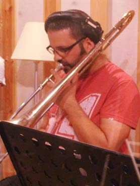

Shira Z. Carmel is a multidisciplinary artist and musician from Jerusalem, Israel. After years of "traveling" between different mediums such as dance, theater, photography, visual and digital arts, Shira, who's been playing different instruments since childhood, now focuses on music, bringing her varied artistic background forth with texts and sounds, and exploring the humane in all its glory and pain through songs.
Shira Z. Carmel (or SZC) has led various musical ensembles in the past decade, The Brasserie (hi!) being the newest addition. Here's a short review, visit shira's Bandcamp for more.
* The Shira Z. Carmel Quartet (or in short SZCQ), with whom she released her official debut album in 2013. The SZCQ has separated shortly after, due to geographical differences.
* The Hazelnuts - a close harmony singing (doo-wop) band. The Hazelnuts released their Debut EP in 2014, and have been receiving critical acclaim and much love from audiences all over Israel and abroad ever since. Come to one of their shows to catch the swing fever!
* The Technicalities - an avant-garde duo with her husband Alon Diament. The duo performed in the Amsterdam International Jewish Msuic Festival in 2012 with its Birobidzhan project. For further info, please visit The Technicalities website.
All bands featured Shira as the vocalist, as well as original music and texts by her, or her musical compositions to poetry of different origins and languages (Hebrew, English, Yiddish).
In the past few years Shira has acquired a name for herself, in Jerusalem and outside of it, performing in major music and art festivals in Israel such as the Indnegev, Yearot Menashe, Pecha Kucha, the Tel Aviv Jazz festival etc. She has also performed in Vienna, Amsterdam and New Orleans.
Shira graduated from the Jerusalem Music academy in the interdisciplinary singing department in 2014, after studying digital art in the university of applied art in Vienna.
In addition to her creative activities Shira produces and curates musical and artistic events, and teaches Hebrew for a living. She has hosted the TIZPOREY LAILA (night owls) radio show on the national radio station GALATZ between the years 2012-2014.
For any more info, please contact SZC.
*photo by May Castelnovo
Orr Sinay - Arrangements
Orr (b. 1988) is a composer, arranger and double bass player. She graduated from the composition dpt. of the Jerusalem Music Academy in 2014, and is now studying in the performed Composer M.F.a program in the prestigious L.A Calarts institution. Orr won several awards for her compositions for dance and theater pieces, and performs regularly with impro and free jazz ensembles. Not forgetting her groovy side, she also wrote and arranged for several groups and projects in Israel, such as Bint El Funk, which she has co-founded in 2013.
Péter Lengyel - Tuba
Péter was born in 1985 in Tiszafüred, Hungary. In 1999, he was admitted to Bartók Béla Music High School, and in 2005 continued his musical education in the Liszt Ferenc Music Academy in Budapest and graduated in 2009 as a Tuba Teacher-Chamber musician. In 2014 he finished his M.A. at the Jerusalem Academy of Music and is now studying for his Ph.D in the Buchmann-Mehta School of Music in Tel Aviv.
During his musical studies Péter played with many orchestras and Ensembles, such as: Stockholm Brass Band, St.Petersburg's Theater Orchestra, Erkel Theater Budapest, Pannónia Klezmer Band, Jerusalem Symphony Orchestra, Israeli Camerata and the Israel Philharmonic Orchestra. He has also won various prizes including 7 first-place prizes as a soloist and chamber musician.
Tal Avraham - Trumpet
Tal, who graduated from the Jerusalem Music Academy in 2014 is one of the busiest trumpet players around, she playes regularly with "Bint El Funk". "a Castle in Time" and has recently started a Brazilian duo where she plays... Pandero!
Yaron Ouzana - Trombone

Yaron Ouzana is one of Israel's most active, well-known trombone players and has played and recorded with many groups, among them - The Apples, Balkan Beat Box, Avi Lebovich Orchestra, and many more.
Nitai Levi - Bass Clarinet
Nitai, who graduated from The Jerusalem Academy of Music in 2007 has been a major part of the Israeli free jazz and Avant guard scene, playing improvised and written music with different ensembles all over Israel. Nitai also has a wind-instruments repair workshop , check his website out (Hebrew).
Tomer Amikam - Clarinet
Tomer (b. 1988) graduated from The Jerusalem Academy of Music in 2015 and playes the clarinet in various classical and pop projects and ensembles. He especially likes playing in theater pieces, such as the latest stage adaptation for Kurt Vonnegut's Slaughterhouse-five in the Acco fringe theater festival.
Noam Shapira - Tenor Sax
Noam - the Brasserie's youngest member (b. 1995) is currently studying jazz saxophone in the Cjs Israel Conservatory in Tel Aviv, and plays with a few rock and indie bands in Tel Aviv.
Oded Levy - Drums
Oded was born in kibbutz Ein-Carmel in 1985. Oded has been making music and playing the drums since he first attended music school at the age of 14, and has been playing ever since. His bands and projects include "Pissaro and the Chiefs" "Devla" and many more jazz, rock ensembles. He studied at the Jerusalem music academy, and proceeded to sound engineering studies at the "Yoav Gera sound school" from which he graduated this year.